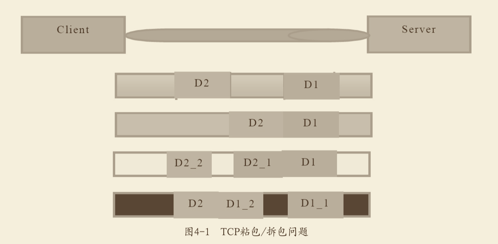

<!DOCTYPE HTML>
<html lang="" >
    <head>
        <meta charset="UTF-8">
        <meta content="text/html; charset=utf-8" http-equiv="Content-Type">
        <title>netty · GitBook</title>
        <meta http-equiv="X-UA-Compatible" content="IE=edge" />
        <meta name="description" content="">
        <meta name="generator" content="GitBook 3.2.3">
        
        
        
    
    <link rel="stylesheet" href="../gitbook/style.css">

    
            
                
                <link rel="stylesheet" href="../gitbook/gitbook-plugin-highlight/website.css">
                
            
                
                <link rel="stylesheet" href="../gitbook/gitbook-plugin-search/search.css">
                
            
                
                <link rel="stylesheet" href="../gitbook/gitbook-plugin-fontsettings/website.css">
                
            
        

    

    
        
    
        
    
        
    
        
    
        
    
        
    

        
    
    
    <meta name="HandheldFriendly" content="true"/>
    <meta name="viewport" content="width=device-width, initial-scale=1, user-scalable=no">
    <meta name="apple-mobile-web-app-capable" content="yes">
    <meta name="apple-mobile-web-app-status-bar-style" content="black">
    <link rel="apple-touch-icon-precomposed" sizes="152x152" href="../gitbook/images/apple-touch-icon-precomposed-152.png">
    <link rel="shortcut icon" href="../gitbook/images/favicon.ico" type="image/x-icon">

    
    <link rel="next" href="dubbo.html" />
    
    
    <link rel="prev" href="springboot.html" />
    

    </head>
    <body>
        
<div class="book">
    <div class="book-summary">
        
            
<div id="book-search-input" role="search">
    <input type="text" placeholder="Type to search" />
</div>

            
                <nav role="navigation">
                


<ul class="summary">
    
    

    

    
        
        
    
        <li class="chapter " data-level="1.1" data-path="../">
            
                <a href="../">
            
                    
                    介绍
            
                </a>
            

            
        </li>
    
        <li class="chapter " data-level="1.2" data-path="../basic.html">
            
                <a href="../basic.html">
            
                    
                    javaSE基础
            
                </a>
            

            
        </li>
    
        <li class="chapter " data-level="1.3" data-path="../senior.html">
            
                <a href="../senior.html">
            
                    
                    javaSE高级
            
                </a>
            

            
        </li>
    
        <li class="chapter " data-level="1.4" data-path="../javaweb.html">
            
                <a href="../javaweb.html">
            
                    
                    java-web基础
            
                </a>
            

            
        </li>
    
        <li class="chapter " data-level="1.5" data-path="../java-versions.html">
            
                <a href="../java-versions.html">
            
                    
                    java版本特性
            
                </a>
            

            
        </li>
    
        <li class="chapter " data-level="1.6" data-path="../collection/readme.html">
            
                <a href="../collection/readme.html">
            
                    
                    java数据类型和集合
            
                </a>
            

            
            <ul class="articles">
                
    
        <li class="chapter " data-level="1.6.1" data-path="../collection/basic.html">
            
                <a href="../collection/basic.html">
            
                    
                    basic
            
                </a>
            

            
        </li>
    
        <li class="chapter " data-level="1.6.2" data-path="../collection/list.html">
            
                <a href="../collection/list.html">
            
                    
                    list
            
                </a>
            

            
        </li>
    
        <li class="chapter " data-level="1.6.3" data-path="../collection/map.html">
            
                <a href="../collection/map.html">
            
                    
                    map
            
                </a>
            

            
        </li>
    
        <li class="chapter " data-level="1.6.4" data-path="../collection/set.html">
            
                <a href="../collection/set.html">
            
                    
                    set
            
                </a>
            

            
        </li>
    
        <li class="chapter " data-level="1.6.5" data-path="../collection/queue.html">
            
                <a href="../collection/queue.html">
            
                    
                    queue
            
                </a>
            

            
        </li>
    
        <li class="chapter " data-level="1.6.6" data-path="../collection/safeCollection.html">
            
                <a href="../collection/safeCollection.html">
            
                    
                    并发容器
            
                </a>
            

            
        </li>
    

            </ul>
            
        </li>
    
        <li class="chapter " data-level="1.7" data-path="../threads/thread.html">
            
                <a href="../threads/thread.html">
            
                    
                    多线程
            
                </a>
            

            
            <ul class="articles">
                
    
        <li class="chapter " data-level="1.7.1" data-path="../threads/threadPool.html">
            
                <a href="../threads/threadPool.html">
            
                    
                    线程池
            
                </a>
            

            
        </li>
    
        <li class="chapter " data-level="1.7.2" data-path="../threads/threadTools.html">
            
                <a href="../threads/threadTools.html">
            
                    
                    并发工具类
            
                </a>
            

            
        </li>
    

            </ul>
            
        </li>
    
        <li class="chapter " data-level="1.8" data-path="../locks/readme.html">
            
                <a href="../locks/readme.html">
            
                    
                    锁
            
                </a>
            

            
            <ul class="articles">
                
    
        <li class="chapter " data-level="1.8.1" data-path="../locks/synchronize.html">
            
                <a href="../locks/synchronize.html">
            
                    
                    悲观锁
            
                </a>
            

            
        </li>
    
        <li class="chapter " data-level="1.8.2" data-path="../locks/lock.html">
            
                <a href="../locks/lock.html">
            
                    
                    乐观锁
            
                </a>
            

            
        </li>
    
        <li class="chapter " data-level="1.8.3" data-path="../locks/atomic.html">
            
                <a href="../locks/atomic.html">
            
                    
                    原子操作
            
                </a>
            

            
        </li>
    
        <li class="chapter " data-level="1.8.4" data-path="../locks/optimizingLock.html">
            
                <a href="../locks/optimizingLock.html">
            
                    
                    锁优化
            
                </a>
            

            
        </li>
    

            </ul>
            
        </li>
    
        <li class="chapter " data-level="1.9" data-path="../io/readme.html">
            
                <a href="../io/readme.html">
            
                    
                    io流
            
                </a>
            

            
            <ul class="articles">
                
    
        <li class="chapter " data-level="1.9.1" data-path="../io/bio.html">
            
                <a href="../io/bio.html">
            
                    
                    bio
            
                </a>
            

            
        </li>
    
        <li class="chapter " data-level="1.9.2" data-path="../io/nio.html">
            
                <a href="../io/nio.html">
            
                    
                    nio
            
                </a>
            

            
        </li>
    
        <li class="chapter " data-level="1.9.3" data-path="../io/aio.html">
            
                <a href="../io/aio.html">
            
                    
                    aio
            
                </a>
            

            
        </li>
    

            </ul>
            
        </li>
    
        <li class="chapter " data-level="1.10" data-path="../jvm.html">
            
                <a href="../jvm.html">
            
                    
                    jvm虚拟机
            
                </a>
            

            
        </li>
    
        <li class="chapter " data-level="1.11" data-path="readme.html">
            
                <a href="readme.html">
            
                    
                    java框架
            
                </a>
            

            
            <ul class="articles">
                
    
        <li class="chapter " data-level="1.11.1" data-path="spring.html">
            
                <a href="spring.html">
            
                    
                    spring
            
                </a>
            

            
        </li>
    
        <li class="chapter " data-level="1.11.2" data-path="mybatis.html">
            
                <a href="mybatis.html">
            
                    
                    mybatis
            
                </a>
            

            
        </li>
    
        <li class="chapter " data-level="1.11.3" data-path="hibernate.html">
            
                <a href="hibernate.html">
            
                    
                    hibernate
            
                </a>
            

            
        </li>
    
        <li class="chapter " data-level="1.11.4" data-path="springboot.html">
            
                <a href="springboot.html">
            
                    
                    springboot
            
                </a>
            

            
        </li>
    
        <li class="chapter active" data-level="1.11.5" data-path="netty.html">
            
                <a href="netty.html">
            
                    
                    netty
            
                </a>
            

            
        </li>
    
        <li class="chapter " data-level="1.11.6" data-path="dubbo.html">
            
                <a href="dubbo.html">
            
                    
                    dubbo
            
                </a>
            

            
        </li>
    

            </ul>
            
        </li>
    
        <li class="chapter " data-level="1.12" data-path="../database/readme.html">
            
                <a href="../database/readme.html">
            
                    
                    数据库
            
                </a>
            

            
            <ul class="articles">
                
    
        <li class="chapter " data-level="1.12.1" data-path="../database/mysql.html">
            
                <a href="../database/mysql.html">
            
                    
                    mysql
            
                </a>
            

            
        </li>
    
        <li class="chapter " data-level="1.12.2" data-path="../database/mongodb.html">
            
                <a href="../database/mongodb.html">
            
                    
                    mongodb
            
                </a>
            

            
        </li>
    
        <li class="chapter " data-level="1.12.3" data-path="../database/redis.html">
            
                <a href="../database/redis.html">
            
                    
                    redis
            
                </a>
            

            
        </li>
    
        <li class="chapter " data-level="1.12.4" data-path="../database/memcached.html">
            
                <a href="../database/memcached.html">
            
                    
                    memcached
            
                </a>
            

            
        </li>
    
        <li class="chapter " data-level="1.12.5" data-path="../database/cache.html">
            
                <a href="../database/cache.html">
            
                    
                    缓存架构
            
                </a>
            

            
        </li>
    
        <li class="chapter " data-level="1.12.6" data-path="../database/db-middleware.html">
            
                <a href="../database/db-middleware.html">
            
                    
                    数据库中间件
            
                </a>
            

            
        </li>
    

            </ul>
            
        </li>
    
        <li class="chapter " data-level="1.13" data-path="../mq/readme.html">
            
                <a href="../mq/readme.html">
            
                    
                    消息队列
            
                </a>
            

            
            <ul class="articles">
                
    
        <li class="chapter " data-level="1.13.1" data-path="../mq/activemq.html">
            
                <a href="../mq/activemq.html">
            
                    
                    activemq
            
                </a>
            

            
        </li>
    
        <li class="chapter " data-level="1.13.2" data-path="../mq/kafka.html">
            
                <a href="../mq/kafka.html">
            
                    
                    kafka
            
                </a>
            

            
        </li>
    
        <li class="chapter " data-level="1.13.3" data-path="../mq/rabbitmq.html">
            
                <a href="../mq/rabbitmq.html">
            
                    
                    rabbitmq
            
                </a>
            

            
        </li>
    
        <li class="chapter " data-level="1.13.4" data-path="../mq/jms.html">
            
                <a href="../mq/jms.html">
            
                    
                    jms
            
                </a>
            

            
        </li>
    
        <li class="chapter " data-level="1.13.5" data-path="../mq/mq-middleware.html">
            
                <a href="../mq/mq-middleware.html">
            
                    
                    消息中间件
            
                </a>
            

            
        </li>
    

            </ul>
            
        </li>
    
        <li class="chapter " data-level="1.14" data-path="../ds/readme.html">
            
                <a href="../ds/readme.html">
            
                    
                    分布式架构
            
                </a>
            

            
            <ul class="articles">
                
    
        <li class="chapter " data-level="1.14.1" data-path="../ds/jiagou.html">
            
                <a href="../ds/jiagou.html">
            
                    
                    架构基础
            
                </a>
            

            
        </li>
    
        <li class="chapter " data-level="1.14.2" data-path="../ds/microService.md">
            
                <span>
            
                    
                    微服务
            
                </a>
            

            
        </li>
    
        <li class="chapter " data-level="1.14.3" data-path="../ds/splitdb.html">
            
                <a href="../ds/splitdb.html">
            
                    
                    分库分表
            
                </a>
            

            
        </li>
    
        <li class="chapter " data-level="1.14.4" data-path="../ds/rpc.html">
            
                <a href="../ds/rpc.html">
            
                    
                    rpc框架
            
                </a>
            

            
        </li>
    
        <li class="chapter " data-level="1.14.5" data-path="../ds/datarooms.html">
            
                <a href="../ds/datarooms.html">
            
                    
                    多机房部署
            
                </a>
            

            
        </li>
    

            </ul>
            
        </li>
    
        <li class="chapter " data-level="1.15" data-path="../devtools/readme.html">
            
                <a href="../devtools/readme.html">
            
                    
                    开发工具
            
                </a>
            

            
            <ul class="articles">
                
    
        <li class="chapter " data-level="1.15.1" data-path="../devtools/maven.html">
            
                <a href="../devtools/maven.html">
            
                    
                    maven
            
                </a>
            

            
        </li>
    
        <li class="chapter " data-level="1.15.2" data-path="../devtools/gradle.html">
            
                <a href="../devtools/gradle.html">
            
                    
                    gradle
            
                </a>
            

            
        </li>
    
        <li class="chapter " data-level="1.15.3" data-path="../devtools/ant.html">
            
                <a href="../devtools/ant.html">
            
                    
                    ant
            
                </a>
            

            
        </li>
    
        <li class="chapter " data-level="1.15.4" data-path="../devtools/git.html">
            
                <a href="../devtools/git.html">
            
                    
                    git
            
                </a>
            

            
        </li>
    
        <li class="chapter " data-level="1.15.5" data-path="../devtools/hexo.html">
            
                <a href="../devtools/hexo.html">
            
                    
                    hexo
            
                </a>
            

            
        </li>
    
        <li class="chapter " data-level="1.15.6" data-path="../devtools/wordpress.html">
            
                <a href="../devtools/wordpress.html">
            
                    
                    wordpress
            
                </a>
            

            
        </li>
    

            </ul>
            
        </li>
    
        <li class="chapter " data-level="1.16" data-path="../linux/readme.html">
            
                <a href="../linux/readme.html">
            
                    
                    linux
            
                </a>
            

            
            <ul class="articles">
                
    
        <li class="chapter " data-level="1.16.1" data-path="../linux/theory.md">
            
                <span>
            
                    
                    linux原理
            
                </a>
            

            
        </li>
    
        <li class="chapter " data-level="1.16.2" data-path="../linux/caozuo.html">
            
                <a href="../linux/caozuo.html">
            
                    
                    linux操作
            
                </a>
            

            
        </li>
    

            </ul>
            
        </li>
    
        <li class="chapter " data-level="1.17" data-path="../server/readme.html">
            
                <a href="../server/readme.html">
            
                    
                    web服务器常用框架
            
                </a>
            

            
            <ul class="articles">
                
    
        <li class="chapter " data-level="1.17.1" data-path="../server/nginx.html">
            
                <a href="../server/nginx.html">
            
                    
                    nginx
            
                </a>
            

            
        </li>
    
        <li class="chapter " data-level="1.17.2" data-path="../server/apache.html">
            
                <a href="../server/apache.html">
            
                    
                    apache
            
                </a>
            

            
        </li>
    
        <li class="chapter " data-level="1.17.3" data-path="../server/tomcat.html">
            
                <a href="../server/tomcat.html">
            
                    
                    tomcat
            
                </a>
            

            
        </li>
    
        <li class="chapter " data-level="1.17.4" data-path="../server/docker.html">
            
                <a href="../server/docker.html">
            
                    
                    docker
            
                </a>
            

            
        </li>
    
        <li class="chapter " data-level="1.17.5" data-path="../server/zookeeper.html">
            
                <a href="../server/zookeeper.html">
            
                    
                    zookeeper
            
                </a>
            

            
        </li>
    

            </ul>
            
        </li>
    
        <li class="chapter " data-level="1.18" data-path="../pattern/readme.html">
            
                <a href="../pattern/readme.html">
            
                    
                    设计模式
            
                </a>
            

            
            <ul class="articles">
                
    
        <li class="chapter " data-level="1.18.1" data-path="../pattern/singleton.html">
            
                <a href="../pattern/singleton.html">
            
                    
                    单例模式
            
                </a>
            

            
        </li>
    
        <li class="chapter " data-level="1.18.2" data-path="../pattern/factory.html">
            
                <a href="../pattern/factory.html">
            
                    
                    工厂模式
            
                </a>
            

            
        </li>
    
        <li class="chapter " data-level="1.18.3" data-path="../pattern/proxy.html">
            
                <a href="../pattern/proxy.html">
            
                    
                    代理模式
            
                </a>
            

            
        </li>
    
        <li class="chapter " data-level="1.18.4" data-path="../pattern/observer.html">
            
                <a href="../pattern/observer.html">
            
                    
                    观察者模式
            
                </a>
            

            
        </li>
    
        <li class="chapter " data-level="1.18.5" data-path="../pattern/strategy.html">
            
                <a href="../pattern/strategy.html">
            
                    
                    策略模式
            
                </a>
            

            
        </li>
    
        <li class="chapter " data-level="1.18.6" data-path="../pattern/template.html">
            
                <a href="../pattern/template.html">
            
                    
                    模板方法模式
            
                </a>
            

            
        </li>
    
        <li class="chapter " data-level="1.18.7" data-path="../pattern/state.html">
            
                <a href="../pattern/state.html">
            
                    
                    状态模式
            
                </a>
            

            
        </li>
    
        <li class="chapter " data-level="1.18.8" data-path="../pattern/chain.html">
            
                <a href="../pattern/chain.html">
            
                    
                    责任链模式
            
                </a>
            

            
        </li>
    

            </ul>
            
        </li>
    
        <li class="chapter " data-level="1.19" data-path="../bigdata/bigdata.html">
            
                <a href="../bigdata/bigdata.html">
            
                    
                    大数据处理
            
                </a>
            

            
            <ul class="articles">
                
    
        <li class="chapter " data-level="1.19.1" data-path="../bigdata/hadoop.md">
            
                <span>
            
                    
                    hadoop
            
                </a>
            

            
        </li>
    
        <li class="chapter " data-level="1.19.2" data-path="../bigdata/spark.md">
            
                <span>
            
                    
                    spark
            
                </a>
            

            
        </li>
    
        <li class="chapter " data-level="1.19.3" data-path="../bigdata/ds-nosql.md">
            
                <span>
            
                    
                    hdfs，hive和hbase
            
                </a>
            

            
        </li>
    

            </ul>
            
        </li>
    
        <li class="chapter " data-level="1.20" data-path="../algorithm/readme.html">
            
                <a href="../algorithm/readme.html">
            
                    
                    算法基础
            
                </a>
            

            
            <ul class="articles">
                
    
        <li class="chapter " data-level="1.20.1" data-path="../algorithm/struct.html">
            
                <a href="../algorithm/struct.html">
            
                    
                    数据结构
            
                </a>
            

            
        </li>
    
        <li class="chapter " data-level="1.20.2" data-path="../algorithm/sort.html">
            
                <a href="../algorithm/sort.html">
            
                    
                    排序算法
            
                </a>
            

            
        </li>
    
        <li class="chapter " data-level="1.20.3" data-path="../algorithm/search.html">
            
                <a href="../algorithm/search.html">
            
                    
                    查找算法
            
                </a>
            

            
        </li>
    

            </ul>
            
        </li>
    
        <li class="chapter " data-level="1.21" data-path="../wangluo.html">
            
                <a href="../wangluo.html">
            
                    
                    网络
            
                </a>
            

            
        </li>
    
        <li class="chapter " data-level="1.22" data-path="../thinkInDeep.html">
            
                <a href="../thinkInDeep.html">
            
                    
                    编程思想相关
            
                </a>
            

            
        </li>
    
        <li class="chapter " data-level="1.23" data-path="../coding.html">
            
                <a href="../coding.html">
            
                    
                    实战演练
            
                </a>
            

            
        </li>
    
        <li class="chapter " data-level="1.24" data-path="../devenv/readme.html">
            
                <a href="../devenv/readme.html">
            
                    
                    附录-环境搭建
            
                </a>
            

            
            <ul class="articles">
                
    
        <li class="chapter " data-level="1.24.1" data-path="../devenv/gitlab.html">
            
                <a href="../devenv/gitlab.html">
            
                    
                    gitlab搭建
            
                </a>
            

            
        </li>
    
        <li class="chapter " data-level="1.24.2" data-path="../devenv/jenkins.html">
            
                <a href="../devenv/jenkins.html">
            
                    
                    jenkins搭建
            
                </a>
            

            
        </li>
    
        <li class="chapter " data-level="1.24.3" data-path="../devenv/maven.html">
            
                <a href="../devenv/maven.html">
            
                    
                    maven私服搭建
            
                </a>
            

            
        </li>
    
        <li class="chapter " data-level="1.24.4" data-path="../devenv/mysql.html">
            
                <a href="../devenv/mysql.html">
            
                    
                    mysql集群搭建
            
                </a>
            

            
        </li>
    
        <li class="chapter " data-level="1.24.5" data-path="../devenv/mongodb.html">
            
                <a href="../devenv/mongodb.html">
            
                    
                    mongodb集群搭建
            
                </a>
            

            
        </li>
    
        <li class="chapter " data-level="1.24.6" data-path="../devenv/nginx.html">
            
                <a href="../devenv/nginx.html">
            
                    
                    nginx配置
            
                </a>
            

            
        </li>
    
        <li class="chapter " data-level="1.24.7" data-path="../devenv/tomcat.html">
            
                <a href="../devenv/tomcat.html">
            
                    
                    tomcat集群搭建
            
                </a>
            

            
        </li>
    
        <li class="chapter " data-level="1.24.8" data-path="../devenv/redis.html">
            
                <a href="../devenv/redis.html">
            
                    
                    redis集群搭建
            
                </a>
            

            
        </li>
    
        <li class="chapter " data-level="1.24.9" data-path="../devenv/docker.html">
            
                <a href="../devenv/docker.html">
            
                    
                    docker环境搭建
            
                </a>
            

            
        </li>
    
        <li class="chapter " data-level="1.24.10" data-path="../devenv/zookeeper.html">
            
                <a href="../devenv/zookeeper.html">
            
                    
                    zookeeper集群搭建
            
                </a>
            

            
        </li>
    

            </ul>
            
        </li>
    
        <li class="chapter " data-level="1.25" data-path="../monitor/readme.html">
            
                <a href="../monitor/readme.html">
            
                    
                    附录-服务监控
            
                </a>
            

            
            <ul class="articles">
                
    
        <li class="chapter " data-level="1.25.1" data-path="../monitor/server.html">
            
                <a href="../monitor/server.html">
            
                    
                    主机资源监控
            
                </a>
            

            
        </li>
    
        <li class="chapter " data-level="1.25.2" data-path="../monitor/javaServer.html">
            
                <a href="../monitor/javaServer.html">
            
                    
                    java服务监控
            
                </a>
            

            
        </li>
    
        <li class="chapter " data-level="1.25.3" data-path="../monitor/database.html">
            
                <a href="../monitor/database.html">
            
                    
                    数据库监控
            
                </a>
            

            
        </li>
    
        <li class="chapter " data-level="1.25.4" data-path="../monitor/redis.html">
            
                <a href="../monitor/redis.html">
            
                    
                    redis监控
            
                </a>
            

            
        </li>
    

            </ul>
            
        </li>
    

    

    <li class="divider"></li>

    <li>
        <a href="https://www.gitbook.com" target="blank" class="gitbook-link">
            Published with GitBook
        </a>
    </li>
</ul>


                </nav>
            
        
    </div>

    <div class="book-body">
        
            <div class="body-inner">
                
                    

<div class="book-header" role="navigation">
    

    <!-- Title -->
    <h1>
        <i class="fa fa-circle-o-notch fa-spin"></i>
        <a href=".." >netty</a>
    </h1>
</div>


                    <div class="page-wrapper" tabindex="-1" role="main">
                        <div class="page-inner">
                            
<div id="book-search-results">
    <div class="search-noresults">
    
                                <section class="normal markdown-section">
                                
                                <h1 id="netty&#x6838;&#x5FC3;">netty&#x6838;&#x5FC3;</h1>
<p>&#x89E3;&#x51B3;&#x4E86;java&#x670D;&#x52A1;&#x76F4;&#x63A5;&#x7684;&#x901A;&#x4FE1;&#x6027;&#x80FD;&#x95EE;&#x9898;&#x3002;</p>
<h2 id="netty&#x662F;&#x4EC0;&#x4E48;&#xFF1F;">netty&#x662F;&#x4EC0;&#x4E48;&#xFF1F;</h2>
<p>Netty&#x662F;&#x4E1A;&#x754C;&#x6700;&#x6D41;&#x2F8F;&#x7684;NIO&#x6846;&#x67B6;&#x4E4B;&#x2F00;&#xFF0C;&#x5B83;&#x7684;&#x5065;&#x58EE;&#x6027;&#x3001;&#x529F;&#x80FD;&#x3001;&#x6027;&#x80FD;&#x3001;&#x53EF;&#x5B9A;&#x5236;&#x6027;&#x548C;&#x53EF;&#x6269;&#x5C55;&#x6027;&#x5728;&#x540C;&#x7C7B;&#x6846;&#x67B6;&#x4E2D;&#x90FD;&#x662F;&#x2FB8;&#x5C48;&#x2F00;&#x6307;&#x7684;&#xFF0C;&#x5B83;&#x5DF2;&#x7ECF;&#x5F97;&#x5230;&#x6210;&#x767E;&#x4E0A;&#x5343;&#x7684;&#x5546;&#x2F64;&#x9879;&#x2F6C;&#x9A8C;&#x8BC1;&#xFF0C;&#x4F8B;&#x5982;Hadoop&#x7684;RPC&#x6846;&#x67B6;avro&#xFF0C;&#x963F;&#x91CC;&#x5DF4;&#x5DF4;&#x7684;dubbo&#x90FD;&#x662F;&#x4F7F;&#x2F64;Netty&#x4F5C;&#x4E3A;&#x5E95;&#x5C42;&#x901A;&#x4FE1;&#x6846;&#x67B6;&#xFF1B;&#x5F88;&#x591A;&#x5176;&#x4ED6;&#x4E1A;&#x754C;&#x4E3B;&#x6D41;&#x7684;RPC&#x6846;&#x67B6;&#xFF0C;&#x4E5F;&#x4F7F;&#x2F64;Netty&#x6765;&#x6784;&#x5EFA;&#x2FBC;&#x6027;&#x80FD;&#x7684;&#x5F02;&#x6B65;&#x901A;&#x4FE1;&#x80FD;&#x2F12;&#x3002;</p>
<h2 id="&#x4E3A;&#x4EC0;&#x4E48;&#x4F7F;&#x7528;netty&#x800C;&#x4E0D;&#x4F7F;&#x7528;java&#x539F;&#x751F;&#x7684;nio&#x505A;&#x901A;&#x4FE1;">&#x4E3A;&#x4EC0;&#x4E48;&#x4F7F;&#x7528;netty&#x800C;&#x4E0D;&#x4F7F;&#x7528;java&#x539F;&#x751F;&#x7684;nio&#x505A;&#x901A;&#x4FE1;</h2>
<ol>
<li>nio&#x64CD;&#x4F5C;api&#x590D;&#x6742;&#xFF0C;&#x4F7F;&#x7528;&#x9EBB;&#x70E6;&#xFF1B;</li>
<li>&#x9700;&#x8981;&#x719F;&#x7EC3;&#x638C;&#x63E1;&#x591A;&#x7EBF;&#x7A0B;&#xFF0C;reactor&#x6A21;&#x5F0F;&#x7B49;&#x6280;&#x672F;&#xFF1B;</li>
<li>&#x53EF;&#x80FD;&#x6027;&#x5DEE;&#xFF0C;&#x9700;&#x8981;&#x89E3;&#x51B3;&#x65AD;&#x7EBF;&#x91CD;&#x8FDE;&#xFF0C;&#x534A;&#x5305;&#x8BFB;&#x5199;&#xFF0C;&#x7F51;&#x7EDC;&#x95EE;&#x9898;&#x7B49;&#xFF1B;</li>
<li>nio&#x56FA;&#x6709;&#x7684;epoll bug&#x3002;</li>
</ol>
<p>&#x7EFC;&#x4E0A;&#x6240;&#x8FF0;&#xFF1A;&#x81EA;&#x5DF1;&#x5F00;&#x53D1;&#x4E00;&#x5957;&#x53EF;&#x9760;&#x7684;nio&#x7A0B;&#x5E8F;&#xFF0C;&#x96BE;&#x5EA6;&#x975E;&#x5E38;&#x5927;&#xFF0C;&#x65F6;&#x95F4;&#x6210;&#x672C;&#x592A;&#x9AD8;&#x3002;&#x6240;&#x4EE5;&#xFF0C;&#x4F7F;&#x7528;netty&#x4F5C;&#x4E3A;&#x901A;&#x4FE1;&#x6846;&#x67B6;&#x6210;&#x4E3A;&#x4E86;&#x4E1A;&#x754C;&#x5171;&#x8BC6;&#x3002;</p>
<h2 id="&#x4F20;&#x7EDF;rpc&#x8C03;&#x7528;&#x6027;&#x80FD;&#x4F4E;&#x7684;&#x539F;&#x56E0;">&#x4F20;&#x7EDF;rpc&#x8C03;&#x7528;&#x6027;&#x80FD;&#x4F4E;&#x7684;&#x539F;&#x56E0;</h2>
<p>1) Java &#x5E8F;&#x5217;&#x5316;&#x673A;&#x5236;&#x662F; Java &#x5185;&#x90E8;&#x7684;&#x4E00;&#x79CD;&#x5BF9;&#x8C61;&#x7F16;&#x89E3;&#x7801;&#x6280;&#x672F;&#xFF0C;&#x65E0;&#x6CD5;&#x8DE8;&#x8BED;&#x8A00;&#x4F7F;&#x7528;&#xFF1B;&#x4F8B;&#x5982;&#x5BF9;&#x4E8E;&#x5F02;&#x6784; &#x7CFB;&#x7EDF;&#x4E4B;&#x95F4;&#x7684;&#x5BF9;&#x63A5;&#xFF0C;Java &#x5E8F;&#x5217;&#x5316;&#x540E;&#x7684;&#x7801;&#x6D41;&#x9700;&#x8981;&#x80FD;&#x591F;&#x901A;&#x8FC7;&#x5176;&#x5B83;&#x8BED;&#x8A00;&#x53CD;&#x5E8F;&#x5217;&#x5316;&#x6210;&#x539F;&#x59CB;&#x5BF9;&#x8C61;&#xFF08;&#x526F;&#x672C;&#xFF09;&#xFF0C; &#x76EE;&#x524D;&#x5F88;&#x96BE;&#x652F;&#x6301;
2) &#x76F8;&#x6BD4;&#x4E8E;&#x5176;&#x5B83;&#x5F00;&#x6E90;&#x7684;&#x5E8F;&#x5217;&#x5316;&#x6846;&#x67B6;&#xFF0C;Java &#x5E8F;&#x5217;&#x5316;&#x540E;&#x7684;&#x7801;&#x6D41;&#x592A;&#x5927;&#xFF0C;&#x65E0;&#x8BBA;&#x662F;&#x7F51;&#x7EDC;&#x4F20;&#x8F93;&#x8FD8;&#x662F;&#x6301;&#x4E45;&#x5316; &#x5230;&#x78C1;&#x76D8;&#xFF0C;&#x90FD;&#x4F1A;&#x5BFC;&#x81F4;&#x989D;&#x5916;&#x7684;&#x8D44;&#x6E90;&#x5360;&#x7528;&#xFF1B;
3) &#x5E8F;&#x5217;&#x5316;&#x6027;&#x80FD;&#x5DEE;&#xFF08;CPU &#x8D44;&#x6E90;&#x5360;&#x7528;&#x9AD8;&#xFF09;</p>
<h2 id="netty&#x9AD8;&#x6027;&#x80FD;&#x7684;&#x539F;&#x7406;">netty&#x9AD8;&#x6027;&#x80FD;&#x7684;&#x539F;&#x7406;</h2>
<ol>
<li>&#x4F7F;&#x7528;reactor&#x7EBF;&#x7A0B;&#x6A21;&#x578B;</li>
<li>&#x96F6;&#x62F7;&#x8D1D;&#xFF0C;&#x51CF;&#x5C11;io&#x6B21;&#x6570;</li>
<li>&#x9ED8;&#x8BA4;&#x4F7F;&#x7528;protobuf&#x4F5C;&#x4E3A;&#x5E8F;&#x5217;&#x5316;&#x6846;&#x67B6;&#xFF0C;&#x6027;&#x80FD;&#x9AD8;</li>
<li>&#x4F7F;&#x7528;&#x5185;&#x5B58;&#x6C60;&#x8FDB;&#x884C;&#x5185;&#x5B58;&#x5206;&#x914D;</li>
</ol>
<h2 id="tcp&#x7C98;&#x5305;&#x548C;&#x62C6;&#x5305;">TCP&#x7C98;&#x5305;&#x548C;&#x62C6;&#x5305;</h2>
<p>&#x4E00;&#x4E2A;&#x5B8C;&#x6574;&#x7684;&#x6570;&#x636E;&#x5305;&#x88AB;tcp&#x5206;&#x6210;&#x591A;&#x4E2A;&#x6570;&#x636E;&#x5305;&#x53D1;&#x9001;&#xFF0C;&#x5C31;&#x662F;&#x7C98;&#x5305;&#x548C;&#x62C6;&#x5305;&#x3002;</p>
<p>&#x5047;&#x8BBE;&#x5BA2;&#x6237;&#x7AEF;&#x5206;&#x522B;&#x53D1;&#x9001;&#x4E86;&#x4E24;&#x4E2A;&#x6570;&#x636E;&#x5305;D1&#x548C;D2&#x7ED9;&#x670D;&#x52A1;&#x7AEF;&#xFF0C;&#x7531;&#x4E8E;&#x670D;&#x52A1;&#x7AEF;&#x2F00;&#x6B21;&#x8BFB;&#x53D6;&#x5230;&#x7684;&#x5B57;&#x8282;&#x6570;&#x662F;&#x4E0D; &#x786E;&#x5B9A;&#x7684;&#xFF0C;&#x6545;&#x53EF;&#x80FD;&#x5B58;&#x5728;&#x4EE5;&#x4E0B;4&#x79CD;&#x60C5;&#x51B5;&#x3002;
</p>
<ol>
<li>&#x670D;&#x52A1;&#x7AEF;&#x5206;&#x4E24;&#x6B21;&#x8BFB;&#x53D6;&#x5230;&#x4E86;&#x4E24;&#x4E2A;&#x72EC;&#x2F74;&#x7684;&#x6570;&#x636E;&#x5305;&#xFF0C;&#x5206;&#x522B;&#x662F;D1&#x548C;D2&#xFF0C;&#x6CA1;&#x6709;&#x7C98;&#x5305;&#x548C;&#x62C6;&#x5305;&#xFF1B;</li>
<li>&#x670D;&#x52A1;&#x7AEF;&#x2F00;&#x6B21;&#x63A5;&#x6536;&#x5230;&#x4E86;&#x4E24;&#x4E2A;&#x6570;&#x636E;&#x5305;&#xFF0C;D1&#x548C;D2&#x7C98;&#x5408;&#x5728;&#x2F00;&#x8D77;&#xFF0C;&#x88AB;&#x79F0;&#x4E3A;TCP&#x7C98;&#x5305;&#xFF1B;</li>
<li>&#x670D;&#x52A1;&#x7AEF;&#x5206;&#x4E24;&#x6B21;&#x8BFB;&#x53D6;&#x5230;&#x4E86;&#x4E24;&#x4E2A;&#x6570;&#x636E;&#x5305;&#xFF0C;&#x7B2C;&#x2F00;&#x6B21;&#x8BFB;&#x53D6;&#x5230;&#x4E86;&#x5B8C;&#x6574;&#x7684;D1&#x5305;&#x548C;D2&#x5305;&#x7684;&#x90E8;&#x5206;&#x5185;&#x5BB9;&#xFF0C;&#x7B2C;&#x2F06;&#x6B21;&#x8BFB;&#x53D6;&#x5230;&#x4E86;D2&#x5305;&#x7684;&#x5269;&#x4F59;&#x5185;&#x5BB9;&#xFF0C;&#x8FD9;&#x88AB;&#x79F0;&#x4E3A;TCP&#x62C6;&#x5305;&#xFF1B;</li>
<li>&#x670D;&#x52A1;&#x7AEF;&#x5206;&#x4E24;&#x6B21;&#x8BFB;&#x53D6;&#x5230;&#x4E86;&#x4E24;&#x4E2A;&#x6570;&#x636E;&#x5305;&#xFF0C;&#x7B2C;&#x2F00;&#x6B21;&#x8BFB;&#x53D6;&#x5230;&#x4E86;D1&#x5305;&#x7684;&#x90E8;&#x5206;&#x5185;&#x5BB9;D1_1&#xFF0C;&#x7B2C;&#x2F06;&#x6B21; &#x8BFB;&#x53D6;&#x5230;&#x4E86;D1&#x5305;&#x7684;&#x5269;&#x4F59;&#x5185;&#x5BB9;D1_2&#x548C;D2&#x5305;&#x7684;&#x6574;&#x5305;&#x3002;</li>
</ol>
<h2 id="tcp&#x7C98;&#x5305;&#x62C6;&#x5305;&#x53D1;&#x2F63;&#x7684;&#x539F;&#x56E0;">TCP&#x7C98;&#x5305;/&#x62C6;&#x5305;&#x53D1;&#x2F63;&#x7684;&#x539F;&#x56E0;</h2>
<ol>
<li>&#x5E94;&#x7528;&#x7A0B;&#x5E8F;&#x5199;&#x5165;&#x7684;&#x5B57;&#x8282;&#x5927;&#x5C0F;&#x5927;&#x4E8E;&#x5957;&#x63A5;&#x5B57;&#x53D1;&#x9001;&#x7F13;&#x51B2;&#x533A;&#x5927;&#x5C0F;</li>
<li>&#x8FDB;&#x884C;&#x4E86;MSS&#x5927;&#x5C0F;&#x7684;TCP&#x5206;&#x6BB5;</li>
<li>&#x4EE5;&#x592A;&#x7F51;&#x7684;payLoad&#x5927;&#x4E8E;MTU&#x8FDB;&#x884C;IP&#x5206;&#x7247;</li>
</ol>
<h2 id="tcp&#x7C98;&#x5305;&#x7684;&#x89E3;&#x51B3;&#x7B56;&#x7565;">TCP&#x7C98;&#x5305;&#x7684;&#x89E3;&#x51B3;&#x7B56;&#x7565;</h2>
<ol>
<li>&#x6D88;&#x606F;&#x5B9A;&#x957F;&#xFF0C;&#x4E0D;&#x5982;&#x957F;&#x5EA6;&#x5C31;&#x8FDB;&#x884C;&#x8865;&#x9F50;&#xFF0C;&#x5982;&#x4F7F;&#x7528;&#x7A7A;&#x683C;&#x8865;&#x4F4D;&#xFF1B;</li>
<li>&#x5728;&#x5305;&#x5C3E;&#x52A0;&#x56DE;&#x8F66;&#x6362;&#x884C;&#x7B26;&#x8FDB;&#x884C;&#x5206;&#x5272;&#xFF0C;&#x5982;ftp&#x534F;&#x8BAE;&#xFF1B;</li>
<li>&#x4F7F;&#x7528;&#x6D88;&#x606F;&#x5934;&#x548C;&#x6D88;&#x606F;&#x4F53;&#x8FDB;&#x884C;&#x4F20;&#x8F93;&#xFF1B;</li>
<li>&#x66F4;&#x590D;&#x6742;&#x7684;&#x5E94;&#x7528;&#x5C42;&#x534F;&#x8BAE;&#xFF1B;</li>
</ol>
<h2 id="netyy&#x5982;&#x4F55;&#x89E3;&#x51B3;tcp&#x7C98;&#x5305;&#xFF0C;&#x62C6;&#x5305;&#x7684;&#x95EE;&#x9898;">netyy&#x5982;&#x4F55;&#x89E3;&#x51B3;tcp&#x7C98;&#x5305;&#xFF0C;&#x62C6;&#x5305;&#x7684;&#x95EE;&#x9898;</h2>
<ol>
<li>LineBasedFrameDecoder&#x548C;StringDecoder(&#x6362;&#x884C;&#x7B26;)</li>
<li>DelimiterBasedFrameDecoder&#xFF08;&#x5206;&#x9694;&#x7B26;&#xFF09;</li>
<li>FixedLengthFrameDecoder&#xFF08;&#x5B9A;&#x957F;&#xFF09;</li>
</ol>
<h2 id="netty&#x9AD8;&#x6027;&#x80FD;&#x7684;&#x8BBE;&#x8BA1;&#x8981;&#x70B9;">netty&#x9AD8;&#x6027;&#x80FD;&#x7684;&#x8BBE;&#x8BA1;&#x8981;&#x70B9;</h2>
<p>&#xFF08;1&#xFF09;&#x91C7;&#x2F64;&#x5F02;&#x6B65;&#x2FAE;&#x963B;&#x585E;&#x7684;I/O&#x7C7B;&#x5E93;&#xFF0C;&#x57FA;&#x4E8E;Reactor&#x6A21;&#x5F0F;&#x5B9E;&#x73B0;&#xFF0C;&#x89E3;&#x51B3;&#x4E86;&#x4F20;&#x7EDF;&#x540C;&#x6B65;&#x963B;&#x585E;I/O&#x6A21;&#x5F0F;&#x4E0B;&#x2F00; &#x4E2A;&#x670D;&#x52A1;&#x7AEF;&#x2F46;&#x6CD5;&#x5E73;&#x6ED1;&#x5730;&#x5904;&#x7406;&#x7EBF;&#x6027;&#x589E;&#x957F;&#x7684;&#x5BA2;&#x6237;&#x7AEF;&#x7684;&#x95EE;&#x9898;&#x3002;</p>
<p>&#xFF08;2&#xFF09;TCP&#x63A5;&#x6536;&#x548C;&#x53D1;&#x9001;&#x7F13;&#x51B2;&#x533A;&#x4F7F;&#x2F64;&#x76F4;&#x63A5;&#x5185;&#x5B58;&#x4EE3;&#x66FF;&#x5806;&#x5185;&#x5B58;&#xFF0C;&#x907F;&#x514D;&#x4E86;&#x5185;&#x5B58;&#x590D;&#x5236;&#xFF0C;&#x63D0;&#x5347;&#x4E86;I/O&#x8BFB;&#x53D6;&#x548C; &#x5199;&#x2F0A;&#x7684;&#x6027;&#x80FD;&#x3002;</p>
<p>&#xFF08;3&#xFF09;&#x2F40;&#x6301;&#x901A;&#x8FC7;&#x5185;&#x5B58;&#x6C60;&#x7684;&#x2F45;&#x5F0F;&#x5FAA;&#x73AF;&#x5229;&#x2F64;ByteBuf&#xFF0C;&#x907F;&#x514D;&#x4E86;&#x9891;&#x7E41;&#x521B;&#x5EFA;&#x548C;&#x9500;&#x6BC1;ByteBuf&#x5E26;&#x6765;&#x7684;&#x6027;&#x80FD; &#x635F;&#x8017;&#x3002;</p>
<p>&#xFF08;4&#xFF09;&#x53EF;&#x914D;&#x7F6E;&#x7684;I/O&#x7EBF;&#x7A0B;&#x6570;&#x3001;TCP&#x53C2;&#x6570;&#x7B49;&#xFF0C;&#x4E3A;&#x4E0D;&#x540C;&#x7684;&#x2F64;&#x6237;&#x573A;&#x666F;&#x63D0;&#x4F9B;&#x5B9A;&#x5236;&#x5316;&#x7684;&#x8C03;&#x4F18;&#x53C2;&#x6570;&#xFF0C;&#x6EE1;&#x2F9C;&#x4E0D; &#x540C;&#x7684;&#x6027;&#x80FD;&#x573A;&#x666F;&#x3002;</p>
<p>&#xFF08;5&#xFF09;&#x91C7;&#x2F64;&#x73AF;&#x5F62;&#x6570;&#x7EC4;&#x7F13;&#x51B2;&#x533A;&#x5B9E;&#x73B0;&#x2F46;&#x9501;&#x5316;&#x5E76;&#x53D1;&#x7F16;&#x7A0B;&#xFF0C;&#x4EE3;&#x66FF;&#x4F20;&#x7EDF;&#x7684;&#x7EBF;&#x7A0B;&#x5B89;&#x5168;&#x5BB9;&#x5668;&#x6216;&#x8005;&#x9501;&#x3002;</p>
<p>&#xFF08;6&#xFF09;&#x5408;&#x7406;&#x5730;&#x4F7F;&#x2F64;&#x7EBF;&#x7A0B;&#x5B89;&#x5168;&#x5BB9;&#x5668;&#x3001;&#x539F;&#x2F26;&#x7C7B;&#x7B49;&#xFF0C;&#x63D0;&#x5347;&#x7CFB;&#x7EDF;&#x7684;&#x5E76;&#x53D1;&#x5904;&#x7406;&#x80FD;&#x2F12;&#x3002;</p>
<p>&#xFF08;7&#xFF09;&#x5173;&#x952E;&#x8D44;&#x6E90;&#x7684;&#x5904;&#x7406;&#x4F7F;&#x2F64;&#x5355;&#x7EBF;&#x7A0B;&#x4E32;&#x2F8F;&#x5316;&#x7684;&#x2F45;&#x5F0F;&#xFF0C;&#x907F;&#x514D;&#x591A;&#x7EBF;&#x7A0B;&#x5E76;&#x53D1;&#x8BBF;&#x95EE;&#x5E26;&#x6765;&#x7684;&#x9501;&#x7ADE;&#x4E89;&#x548C;&#x989D;&#x5916; &#x7684;CPU&#x8D44;&#x6E90;&#x6D88;&#x8017;&#x95EE;&#x9898;&#x3002;</p>
<p>&#xFF08;8&#xFF09;&#x901A;&#x8FC7;&#x5F15;&#x2F64;&#x8BA1;&#x6570;&#x5668;&#x53CA;&#x65F6;&#x5730;&#x7533;&#x8BF7;&#x91CA;&#x653E;&#x4E0D;&#x518D;&#x88AB;&#x5F15;&#x2F64;&#x7684;&#x5BF9;&#x8C61;&#xFF0C;&#x7EC6;&#x7C92;&#x5EA6;&#x7684;&#x5185;&#x5B58;&#x7BA1;&#x7406;&#x964D;&#x4F4E;&#x4E86;GC&#x7684; &#x9891;&#x7387;&#xFF0C;&#x51CF;&#x5C11;&#x4E86;&#x9891;&#x7E41;GC&#x5E26;&#x6765;&#x7684;&#x65F6;&#x5EF6;&#x589E;&#x2F24;&#x548C;CPU&#x635F;&#x8017;&#x3002;</p>
<h2 id="netty&#x7684;&#x53EF;&#x9760;&#x6027;&#x8BBE;&#x8BA1;">netty&#x7684;&#x53EF;&#x9760;&#x6027;&#x8BBE;&#x8BA1;</h2>
<ol>
<li>&#x94FE;&#x8DEF;&#x7684;&#x6709;&#x6548;&#x68C0;&#x6D4B;&#xFF1B;<ul>
<li>&#x8BFB;&#x7A7A;&#x95F2;&#x8D85;&#x65F6;&#x673A;&#x5236;</li>
<li>&#x5199;&#x7A7A;&#x95F2;&#x8D85;&#x65F6;&#x673A;&#x5236;</li>
</ul>
</li>
<li>&#x5185;&#x5B58;&#x4FDD;&#x62A4;&#x673A;&#x5236;<ul>
<li>&#x901A;&#x8FC7;&#x5F15;&#x7528;&#x8BA1;&#x6570;&#x5BF9;ByteBuff&#x7B49;&#x5BF9;&#x8C61;&#x8FDB;&#x884C;&#x7EC6;&#x7C92;&#x5EA6;&#x7684;&#x5185;&#x5B58;&#x7533;&#x8BF7;&#x548C;&#x91CA;&#x653E;</li>
<li>&#x901A;&#x8FC7;&#x5185;&#x5B58;&#x6C60;&#x6765;&#x91CD;&#x7528;ByteBuf&#xFF0C;&#x8282;&#x7701;&#x5185;&#x5B58;</li>
<li>&#x53EF;&#x8BBE;&#x7F6E;&#x5185;&#x5B58;&#x5BB9;&#x91CF;&#x4E0A;&#x7EBF;&#xFF0C;&#x5305;&#x62EC;ByteBuf&#x548C;&#x7EBF;&#x7A0B;&#x6C60;&#x7EBF;&#x7A0B;&#x6570;</li>
</ul>
</li>
<li>&#x4F18;&#x96C5;&#x505C;&#x673A;</li>
</ol>
<h2 id="netty&#x7684;&#x53EF;&#x5B9A;&#x5236;&#x6027;">netty&#x7684;&#x53EF;&#x5B9A;&#x5236;&#x6027;</h2>
<ol>
<li>&#x57FA;&#x4E8E;&#x8D23;&#x4EFB;&#x94FE;&#x6A21;&#x5F0F;&#xFF0C;&#x4FBF;&#x4E8E;&#x4E1A;&#x52A1;&#x903B;&#x8F91;&#x7684;&#x62E6;&#x622A;&#x5B9A;&#x5236;&#xFF0C;&#x548C;&#x6269;&#x5C55;</li>
<li>&#x57FA;&#x4E8E;&#x63A5;&#x53E3;&#x5F00;&#x53D1;&#xFF0C;&#x901A;&#x8FC7;&#x5B9E;&#x73B0;&#x63A5;&#x53E3;&#x7528;&#x6237;&#x53EF;&#x4EE5;&#x81EA;&#x5B9A;&#x4E49;&#x5B9E;&#x73B0;</li>
<li>&#x63D0;&#x4F9B;&#x5927;&#x91CF;&#x5DE5;&#x5382;&#x7C7B;&#xFF0C;&#x901A;&#x8FC7;&#x91CD;&#x8F7D;&#x53EF;&#x4EE5;&#x6309;&#x9700;&#x521B;&#x5EFA;&#x5BF9;&#x8C61;</li>
<li>&#x63D0;&#x9AD8;&#x5927;&#x91CF;&#x7CFB;&#x7EDF;&#x53C2;&#x6570;&#x4F9B;&#x7528;&#x6237;&#x8BBE;&#x7F6E;</li>
</ol>
<h2 id="&#x4F7F;&#x7528;netty&#x5B9E;&#x73B0;&#x81EA;&#x5B9A;&#x4E49;&#x7684;&#x534F;&#x8BAE;">&#x4F7F;&#x7528;netty&#x5B9E;&#x73B0;&#x81EA;&#x5B9A;&#x4E49;&#x7684;&#x534F;&#x8BAE;</h2>
<h2 id="netty&#x5185;&#x5B58;&#x6A21;&#x578B;">netty&#x5185;&#x5B58;&#x6A21;&#x578B;</h2>
<ol>
<li>buf&#x5982;&#x4F55;&#x521B;&#x5EFA;&#x548C;&#x91CA;&#x653E;&#xFF1F;</li>
<li>&#x5982;&#x4F55;&#x4FDD;&#x8BC1;&#x6CA1;&#x6709;&#x5185;&#x5B58;&#x788E;&#x7247;&#xFF1F;</li>
</ol>
<blockquote>
<p>&#x53C2;&#x8003;&#x300A;netty&#x6743;&#x5A01;&#x6307;&#x5357;&#x300B;&#xFF0C;&#x300A;netty&#x5B9E;&#x6218;&#x300B;&#x3002;</p>
</blockquote>

                                
                                </section>
                            
    </div>
    <div class="search-results">
        <div class="has-results">
            
            <h1 class="search-results-title"><span class='search-results-count'></span> results matching "<span class='search-query'></span>"</h1>
            <ul class="search-results-list"></ul>
            
        </div>
        <div class="no-results">
            
            <h1 class="search-results-title">No results matching "<span class='search-query'></span>"</h1>
            
        </div>
    </div>
</div>

                        </div>
                    </div>
                
            </div>

            
                
                <a href="springboot.html" class="navigation navigation-prev " aria-label="Previous page: springboot">
                    <i class="fa fa-angle-left"></i>
                </a>
                
                
                <a href="dubbo.html" class="navigation navigation-next " aria-label="Next page: dubbo">
                    <i class="fa fa-angle-right"></i>
                </a>
                
            
        
    </div>

    <script>
        var gitbook = gitbook || [];
        gitbook.push(function() {
            gitbook.page.hasChanged({"page":{"title":"netty","level":"1.11.5","depth":2,"next":{"title":"dubbo","level":"1.11.6","depth":2,"path":"kuangjia/dubbo.md","ref":"kuangjia/dubbo.md","articles":[]},"previous":{"title":"springboot","level":"1.11.4","depth":2,"path":"kuangjia/springboot.md","ref":"kuangjia/springboot.md","articles":[]},"dir":"ltr"},"config":{"gitbook":"*","theme":"default","variables":{},"plugins":[],"pluginsConfig":{"highlight":{},"search":{},"lunr":{"maxIndexSize":1000000,"ignoreSpecialCharacters":false},"sharing":{"facebook":true,"twitter":true,"google":false,"weibo":false,"instapaper":false,"vk":false,"all":["facebook","google","twitter","weibo","instapaper"]},"fontsettings":{"theme":"white","family":"sans","size":2},"theme-default":{"styles":{"website":"styles/website.css","pdf":"styles/pdf.css","epub":"styles/epub.css","mobi":"styles/mobi.css","ebook":"styles/ebook.css","print":"styles/print.css"},"showLevel":false}},"structure":{"langs":"LANGS.md","readme":"README.md","glossary":"GLOSSARY.md","summary":"SUMMARY.md"},"pdf":{"pageNumbers":true,"fontSize":12,"fontFamily":"Arial","paperSize":"a4","chapterMark":"pagebreak","pageBreaksBefore":"/","margin":{"right":62,"left":62,"top":56,"bottom":56}},"styles":{"website":"styles/website.css","pdf":"styles/pdf.css","epub":"styles/epub.css","mobi":"styles/mobi.css","ebook":"styles/ebook.css","print":"styles/print.css"}},"file":{"path":"kuangjia/netty.md","mtime":"2018-04-23T01:56:09.085Z","type":"markdown"},"gitbook":{"version":"3.2.3","time":"2018-04-23T15:08:11.534Z"},"basePath":"..","book":{"language":""}});
        });
    </script>
</div>

        
    <script src="../gitbook/gitbook.js"></script>
    <script src="../gitbook/theme.js"></script>
    
        
        <script src="../gitbook/gitbook-plugin-search/search-engine.js"></script>
        
    
        
        <script src="../gitbook/gitbook-plugin-search/search.js"></script>
        
    
        
        <script src="../gitbook/gitbook-plugin-lunr/lunr.min.js"></script>
        
    
        
        <script src="../gitbook/gitbook-plugin-lunr/search-lunr.js"></script>
        
    
        
        <script src="../gitbook/gitbook-plugin-sharing/buttons.js"></script>
        
    
        
        <script src="../gitbook/gitbook-plugin-fontsettings/fontsettings.js"></script>
        
    

    </body>
</html>

